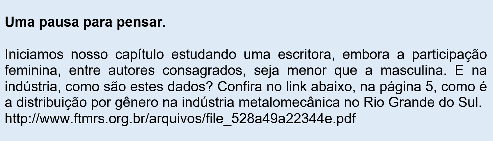

Capítulo 1: A inserção da mulher no trabalho e o contexto da literatura dos ano 1950
Questão-problema:
O Brasil foi cenário, na década de 1950, durante o governo de Juscelino Kubitscheck, de um grande salto desenvolvimentista, com a ampliação massiva da indústria. Foi também um período de grande efervescência cultural. E a literatura brasileira, como se comportou nesta década?
Os anos 50
A construção de Brasília e o surgimento do avião a jato -
Documentários de Jean Manzon retratam a história recente do país:
http://tvbrasil.ebc.com.br/memoria-do-brasil/episodio/a-construcao-de-brasilia-e-o-surgimento-do-aviao-a-jato
Saiba mais em: https://www.todamateria.com.br/bossa-nova
Reconstruindo conhecimentos:
Vamos conhecer, neste capítulo, uma escritora e um escritor
que se destacaram na literatura brasileira da década de 1950. Certamente, você já ouviu falar, ou mesmo chegou a ler,
textos escritos por algum deles
Clarice Lispector (1920-1977)
Na extremidade de um punção de aço, o corpo em relevo da letra era gravado. Usavam-se ferramentas de precisão e se obtinha o patriz. Para a impressão da Bíblia de 42 linhas foram necessários 296 punções, para obter todos os glifos (letras, números, ligaduras, abreviações) usados para compor a obra.
Clarice Lispector foi uma escritora e jornalista brasileira, de origem judia (nasceu na Ucrânia, mas emigrou para o Brasil com apenas seis anos), reconhecida como uma das mais importantes escritoras do século XX. Fez parte do Terceiro Tempo Modernista, que com seu romance inovador e com sua linguagem altamente poética, põe em cheque os modelos narrativos tradicionais. Principais obras: Perto do coração selvagem (1944); Laços de família (contos, 1960); A paixão segundo G.H. (1964); A hora da estrela (1977).
Tanto os romances como os contos de Clarice Lispector demonstram uma característica peculiar: o predomínio do monólogo interiorizado do personagem (geralmente feminino) que busca a sua libertação na construção de outros mundos. O fluxo da consciência permite ao personagem reconhecer que está em constante interação com o mundo real, porque aí reside o antagonismo. Um mundo, geralmente, automático e monótono. No momento em que esta reflexão o induz a reconhecer um mundo já preestabelecido, ele chega ao próprio limite. Assim, a única saída que vê será no místico-abstrato, ou seja, na procura de um universo independente do já materialista dia-a-dia. A agonia dos personagens de Clarice Lispector está presente desde às situações mais corriqueiras até as mais complexas.
João Guimarães Rosa (1908 – 1967)
João Guimarães Rosa nasce em Cordisburgo, Minas Gerais, em 1908, e falece em 1967, no Rio de Janeiro. Forma-se em Medicina e exerce a profissão no interior mineiro.
Em 1933 vai para Barbacena como oficial-médico. Em 1934 entra para a diplomacia brasileira, atuando, como Embaixador, no período entre 1938 e 1963, na Alemanha, na Colômbia
e na França. No ano de 1963 é eleito para a Academia Brasileira de Letras, posse que é adiada pelo próprio Guimarães Rosa que temia forte emoção. Em 1967 toma posse na
Academia Brasileira de Letras, morrendo, vitimado por um enfarte, três dias depois.
Principais obras: Saga (1946); Corpo de baile (1956); Grande sertão: veredas (1956); Primeiras estórias (1962); Tutameia (1967).
As características básicas da obra de Guimarães Rosa são:
- Rigorosa análise da ambientação do interior mineiro e da psicologia dos personagens e de seus costumes e crenças;
- O chamado “regionalismo universal”: além da paisagem do sertão mineiro, o nível de discussão se amplia com temas filosóficos e metafísicos;
- Rompimento com a narrativa tradicional do Romance de 30 (Neo-Realismo);
- Elaborada pesquisa linguística, abrangendo os níveis semântico e sintático: o neologismo (recriação da linguagem) e o arcaísmo (o falar do sertanejo);
- Recuperação do mundo sertanejo (vaqueiros, jagunços, fazendeiros, multidão sertaneja...);
- Recuperação dos seguintes temas básicos: loucura, violência, morte, infância, misticismo, sertanismo, amor, religiosidade. Tais temas dão a dimensão necessária para o universal temático.
Seu romance Grande sertão: veredas é considerado uma das obras mais importantes da literatura brasileira. Nele, Riobaldo, o narrador-protagonista, conta a um viajante, que resolve descansar em sua
fazenda, o seu passado. Riobaldo afirma ter sido cangaceiro nos gerais e que hoje desfruta de um presente diferente, porque é dono de terras. Morando com a esposa, diz esperar somente uma coisa da vida:
a morte. Ao relembrar o passado, diz ter pertencido ao grupo de Joca Ramiro. Este, traído, é morto por Hermógenes, jagunço temível. Da dissidência do grupo de Joca, forma-se um grupo rival: o de Hermógenes
e o de Ricardão. Surge, no grupo de Joca, um cangaceiro ágil e respeitável: Reinaldo. Aos poucos, vai ganhando a confiança do grupo. Riobaldo se aproxima de Reinaldo e estranha estas relações, porque sente “algo a mais”
por Reinaldo. Por conta disso, condena-se. Certo dia, Reinaldo afirma chamar-se Diadorim, mas não explica o porquê a Riobaldo. Sabendo que Reinaldo/Diadorim irá duelar com Hermógenes, Riobaldo embrenha-se na mata invocando
o Diabo para si. Do Diabo, recebe a força e a coragem necessárias para matar o inimigo Hermógenes, segundo o que imagina. Assim como Hermógenes, Riobaldo passa a ser pactário, ou seja, fez pacto com alguém, vendendo sua alma
para o Diabo. Ao ir combater com Hermógenes, recebe a notícia de que Diadorim já havia lutado com Hermógenes e Ricardão. Chocado, Riobaldo vai despedir-se do amigo. Reconhece em Diadorim uma mulher. Era Maria Deodorina,
filha de Joca Ramiro, que optara por vingança em nome de seu pai. Atordoado, Riobaldo abandona a jagunçagem. No momento presente, Riobaldo espera a morte.
Praticando - Reflexão e ação
1. Procure fotos de sua cidade da década de 1950 e compare o lugar retratado com o que há hoje nesse lugar. Exercite a sua imaginação para contar como as pessoas viviam, quais eram os seus costumes, em que elas trabalhavam.
O que será que uma pessoa daquela época percebia do que estava ocorrendo ao seu redor? Tente imaginar quais eram os sonhos dessas pessoas, o que elas esperavam para os seus filhos e netos?
2. (FEI-SP) Trata-se do último livro publicado por Clarice Lispector, em vida, em 1977. A personagem protagonista é Macabéa, que acumula em seu corpo franzino todas as formas de repressão cultural, o que a deixa alheada de si e da sociedade.
As afirmações acima referem-se à obra:
a) A hora da estrela.
b) Perto do coração selvagem.
c) A mação no escuro.
d) A paixão segundo G.H.
e) Laços de família.
3. (Enem - 2011) “Quem é pobre, pouco se apega, é um giro-o-giro no vago dos gerais, que nem os pássaros de rios e lagoas. O senhor vê: o Zé-Zim, o melhor meeiro meu aqui, risonho e habilidoso. Pergunto: — Zé-Zim, por que é que você não cria
galinhas-d‘angola, como todo o mundo faz? — Quero criar nada não... — me deu resposta: — Eu gosto muito de mudar... [...] Belo um dia, ele tora. Ninguém discrepa. Eu, tantas, mesmo digo. Eu dou proteção. [...] Essa não faltou também à minha mãe,
quando eu era menino, no sertãozinho de minha terra. [...] Gente melhor do lugar eram todos dessa família Guedes, Jidião Guedes; quando saíram de lá, nos trouxeram junto, minha mãe e eu. Ficamos existindo em território baixio da Sirga, da outra banda,
ali onde o de-Janeiro vai no São Francisco, o senhor sabe.”
ROSA, J. G. Grande Sertão: Veredas. Rio de Janeiro: José Olympio (fragmento).
Na passagem citada, Riobaldo expõe uma situação decorrente de uma desigualdade social típica das áreas rurais brasileiras marcadas pela concentração de terras e pela relação de dependência entre agregados e fazendeiros. No texto, destaca-se essa relação porque o personagem-narrador
(a) relata a seu interlocutor a história de Zé-Zim, demonstrando sua pouca disposição em ajudar seus agregados, uma vez que superou essa condição graças à sua força de trabalho.
(b) descreve o processo de transformação de um meeiro — espécie de agregado — em proprietário de terra.
(c) denuncia a falta de compromisso e a desocupação dos moradores, que pouco se envolvem no trabalho da terra.
(d) mostra como a condição material da vida do sertanejo é dificultada pela sua dupla condição de homem livre e, ao mesmo tempo, dependente.
(e) mantém o distanciamento narrativo condizente com sua posição social, de proprietário de terras.
O que aprendi:
- Neste capítulo tratamos da relação existente entre a literatura e a realidade do Brasil da década de 1950.
- Estudamos dois escritores importante dessa época: Clarice Lispector e Guimarães Rosa.